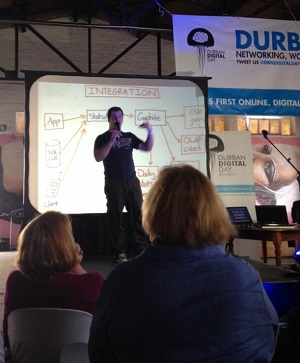

 Occasionally I give a talk on something interesting. I'll leave my slides here for your perusal.
31 October 2013 I was lucky to have presented a 15 minute lightning talk on metrics at Durban Digital Day. I took the audience through why metrics are so important and gave a quick overview of what's needed to collect and visualise metrics in your company.
Slides: business-application-metrics-luke-venediger.pdf
14 Feb 2012 While I was a front-end developer working at Amazon I had an interview with Hendrik Swanepoel about the state of JavaScript and what we can expect from the future.
2Beards: Amazon developer Luke Venediger on all things JavaScript from hendrikswan on Vimeo.